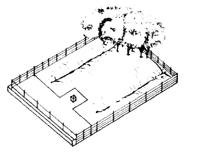
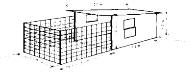
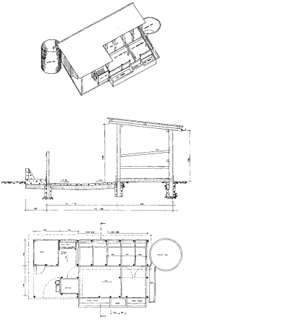
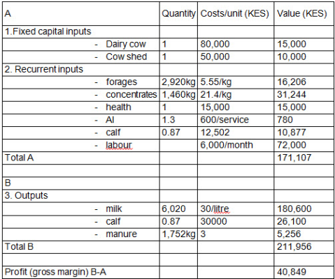
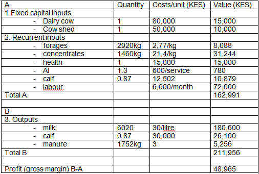
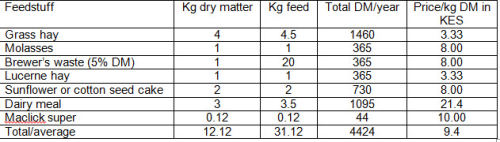
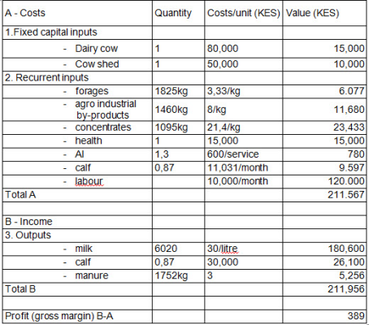
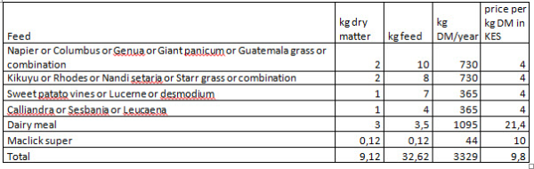
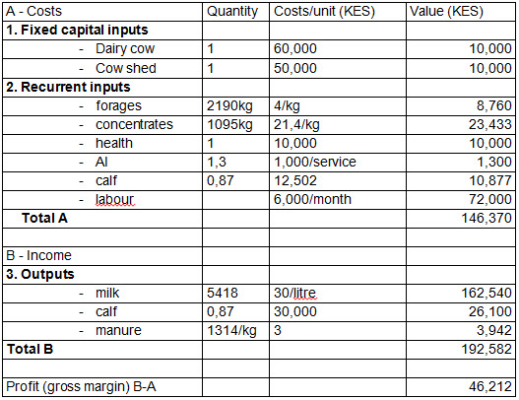
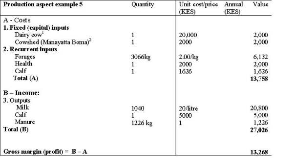

Cattle (new with animal welfare standards)
{kind=link}
Introduction
Cattle and other ruminants convert forage, including low-quality crop residues, into valuable products. The relative importance of these products will vary from one livestock system to another. In large ranching companies, in Africa and Latin America, meat is the main product. Among resource-poor smallholders and most pastoralists, manure, milk and draught power are the important products from cattle. Among the Maasai of East Africa, where it has always been assumed that the sale of animals is the driving factor in cattle rearing, milk is ranked as the number one commodity.In areas where a market exists, these products are sold to provide income.
In mixed farming systems, cattle play a major role in household food security. In some of these systems manure is more important than milk or meat, as it helps to improve or maintain soil fertility and hence food production. As resource-poor households in most of the developing world organic farming is the most sustainable way of using natural recourses and producing without exhausting the soil and without pollution. Besides that, most small holder farmers cannot afford buying chemical fertilisers. Manure is generally the only source of nutrients applied to the crop fields and to produce compost in mixing it with green plant material.As draught animals, cattle also allow households to plough and cultivate more land and remove labour bottlenecks during weeding. Cattle have been used traditionally as draught animals in many parts of the developing world, especially in Ethiopia, parts of East and Southern Africa, and Asia.
In Kenya, the Arid and Semi Arid Lands make up 84% of Kenya's total land surface; supports about 8 million Kenyans, as well as 50% of the livestock and 65% of the wildlife population. Kenya Arid and Semi Arid Lands produce the bulk of the red meat consumed in Kenya under nomadic pastoralism and ranching production systems supporting about 6 million beef cattle. The beef industry represents an important proportion of the economy accounting for about 70% of total beef meat consumed in the country. Apart from meat beef cattle have several benefits, which include; milk, hides and skins, draught power for land preparation and transport and manure too.
Smallholder dairy farmers in East and Southern Africa produce over 80% of the milk consumed in this region. The majority of the milk is produced by cattle, about 10% of all milk is camel's milk and about 4% is goat's milk. Estimates from 2007 rate annual milk production in Kenya at 3.5 billion litres, worth over 50 billion Ksh annually. This sector of agriculture, forming an economical basis of millions of livelihoods, has huge potential for improvement through management practices, better feeding and breeding practices, disease management and improved care of the young.
Well worked out economics of dairy production is essential for making profits from dairy production. The economics of animal keeping is very dependent on the basic corner stones: Health, welfare and basic good Nutrition.
Understand Cattle and promote their Health and Welfare
Cattle have a history of domestication for thousands of years. Many different breeds are developed and adapted to highly different environments and conditions throughout the world. They are natural grazers and their digestion is totally geared towards grazing and eating roughage. They will graze and ruminate most of the day. When grazing, they will stand with one front leg a little in front of the other, and graze as they slowly walk forward. They do not naturally walk backwards, and therefore most bed and cubicle systems force them to unnatural movements for their anatomy. They are remarkably strong and robust animals, and if a trustful relationship with humans is created, they are friendly, patient and collaborative towards humans. Since they are strong, they can cause a lot of damage if they are scared and confused, which is often due to mistreatment or lack of guidance on what they should do. They do not want to walk from light to darkness, they prefer to walk uphill rather than downhill, and they do not want to walk around sharp corners.
They get easily scared if they see unknown things, like cloth blowing in the wind. Their walkway and housing systems should be designed to meet these needs for them to feel safe and comfortable. The humans should take the time which the cattle need to walk in their own pace - otherwise the risk of lameness gets high. Cattle have a vivid body language, which we as humans can read. They use their tails in their communication: when it is hanging down, it is relaxed, and when it is in between the hind legs, it is scared or cold or in pain. When alert, it raises its tail. The ears and head movements clearly shows their mood: curious, angry, scared etc.
 |
|
Cattle needs space to lay down or rise up. This space should always be provided when designing housing facilities. An adult cow uses about 3 meters to get up or lay down. The movement forward with the head and shoulders alone is about 0.7-1 meter. |
| (c) Mette Vaarst
|
Cattle have a good sight, but a blind angle behind them - therefore they should always be approached slightly from the side to not get startled.
They need space to 'swing' their body when laying down or raising up. This space should always be provided when designing housing facilities. An adult cow uses about 3 meters to get up or lay down. The movement forward with the head and shoulders alone is about 0.7-1 meter.
Cattle are clean animals. They prefer to not step in their own manure, they have an instinct that they should graze in a distance from dung to avoid parasites, which can be transferred through manure. For their personal skin hygiene, they groom each other, and they can reach all parts of their own body. To do this, they should always have a non-slippery floor to stand on. This is also necessary when they show that they are in heat, because then other cows or the bull will approach them and jump on their back (the sign for the owner that they are in heat), and they can damage themselves severely if the floor does not allow safe jumping.
Much of their behavior can be explained by the fact that they are flock animals. This means that they perform synchronic behavior: they want to do the same things at the same time, and stay in the group. They graze and lay down as a group. One cow is not likely to leave the group, unless she is diseased or expect to calve.
Cattle health and welfare are two very important aspects of dairy production.
Many losses in dairy cattle production can be avoided by paying careful attention to preventive health care and seeing that the animals are comfortable and able to function the way nature intended. The following are the main preventive measures every serious dairy farmer should consider:
- Proper feeding and prevention of starvation is the first aspect to be addressed
- Disease prevention such as regular tick control
- Prevention of management and production diseases
- Vaccination of animals according to veterinary recommendations for the area
- Good housing/ milking facilities, where proper hygiene can be managed
- Good supervision to ensure incidental diseases are dealt with in a timely and appropriate manner
1. Hunger and thirst
Cows spend 7-9 hours a day grazing and nearly the same amount of time ruminating the ingested feed. Adequate provision of fibre is an essential requirement for a healthy rumen environment. Fibre ranging from 7-10 cm in length (approximately the width of the muzzle) is optimum and prevents cattle selecting through the ration and discarding longer fibre. Long fibre stimulates cudding, which in turn stimulates saliva production, and saliva is the primary rumen buffer, preventing acidosis. The optimum forage to concentrate ratio to maintain rumen health and pH at 6 - 6.8 is 60:40 on a dry matter (DM) basis (roughage: concentrate). Rumen acidosis is the most common forage related stress that we see in dairy cattle. Rumen acidosis is primarily due to inadequate levels of effective fibre in the rations of those cows. High yielding cows are commonly fed diets containing 45 - 55 % forage on a DM basis. Finishing beef cattle are often fed a diet consisting of 25 - 40% forage on a DM basis.
2. Freedom from discomfort
A long lying period and space to move freely, lying and raising up, and escaping in cases of confrontations is important in the prevention of lameness in dairy cows, and it has also been noted that cows spend significantly more time lying down ruminating, as opposed to standing ruminating. Because a large percentage of cattle time is spent ruminating whilst loafing, dry comfortable hygienic bedding that encourages cows to lie down is highly important.
3. Freedom from pain, injury or disease
Hygienic bedding material in order to minimize the risk of mastitis is a priority. Being able to lie down is very important to cattle. When given choice and optimum conditions, cows are known to spend 50% or more of their time lying down. A comfortable resting surface is an important aspect in encouraging cows to lie down. Cattle prefer dry, soft, insulating bedding, and subsequently show reduced incidence and severity of leg injuries.In addition, the following need to be adhered to:
- Stocking Rate: A stocking rate of 1 to 1.4 Lu's/ha is suitable for organic farming. ( Lu= Livestock Unit)
- Livestock System: Suckler cows and sheep are suited to organic farming. Under good husbandry natural immunity to parasites and diseases can develop. A grazing system which reduces the worm burden should be established.
- Clover: Clover is essential at higher stocking rates. Good clover stands can double pasture production, grass quality and animal performance is improved.
- Tillage: Some tillage is a major bonus. It provides cheaper grain and straw and allows the renewal of grassland. From 2008 only organic cereals can be fed to ruminants.
- Housing: The conventional straw bedded sheep house conforms to organic standards. In cattle housing a straw bedded lying area is essential (the feeding area may be slatted).
For more information on calf life and natural behaviour related to calving click here
Guidance to determine body condition score (BCS) in cows.
It tells very much about the cows feeding status and health condition. To the left: photos of a skinny Holstein Friesian and a fat Holstein Friesian, at each end of the Body Condition Score.
 |
| Body condition score in cows |
| (c) Mette Vaarst |
 |
| Skinny Holstein Friesian |
| (c) Mette Vaarst
|
 |
| Fat Holstein Friesian |
| (c) Mette Vaarst
|
Cattle breeds
In Kenya indigenous breeds and exotic breeds and crossbreeds are used to produce milk and meat. In general indigenous breeds are more hardy and more resistant to diseases and parasites than the imported breeds from Europe and the USA. They are more suitable for conditions on smallholder farms where large part of the ration consists of roughage and locally produced supplements as by-products of crop production. Milk yield is lower than from the exotic breeds but in optimal conditions the capacity for milk production proves to be high.
For more Information on cattle breeds and breeding click here
Calving and calf rearing
Dry the cow 2 months before expected calving. If she had no trouble with mastitis nor high somatic cell counts, there is no need to consider mastitis treatment. Observe her carefully throughout the dry period for signs of mastitis and other diseases. Try to keep the cow in a good body condition (score 3.5 out of 5, see above). A few weeks before the expected calving team her up by giving 2 to 4 kg of energy rich feed per day. Introduce in-calf heifers to the dairy unit before calving for them to get used to the environment. Do not disturb the group dynamics close to calving by introducing new animals to the group. Normal calving will occur 280+-10 days from last service.
 |
| Cow calendar |
| (c) CAIS, Kenya |
A cow calendar is a very useful tool in estimating calving dates of cows. The cow calendar consist of two separate but connected discs, the lower disc displaying the days of the year and the upper disc the interval between service date, repeat heat cycles, and calving date. It also shows when a cow should be dried and steamed up (stop milking and start feeding to prepare for normal calving and highest possible milk production). Such calendars can be ordered from CAIS (Central Artificial Insemination Station) Kenya. (Contact: CAIS - Tel: 4181325/6 - Email: info@cais.co.ke)
Calving Signs
The animal will portray the following signs before calving:
- Swelling of the udder
- Clear discharge of mucus from the enlarged vulva
- Loss of appetite and restlessness
- Relaxation of ligaments on both sides of tail
Precautions during calving
The following precautions should be observed before calving to ensure safety of the mother and its calf:
- Pay special attention to calving heifers as they are likely to have problems
- Disinfect hind quarters before calving
- Ensure that after the calf is born it is licked by the dam and is free of mucus at the nostrils, mouth and eyes
- Naval cord should be cut and tied then disinfected with iodine
- The newborn calf should be allowed to suckle the mother the first 24 hours to get colostrum. Make sure that the calf gets colostrum within two hours after being born
- Placenta (afterbirth) should come out within 12 hours after calving
- A veterinary doctor should be called in case of a difficult calving or retained placenta
Calf rearing and feeding
A successful livestock owner knows that it really pays to take very good care of the young stock. The bull calves can be sold and the heifer calves are the future cows and production animals. Any losses means future income will be reduced. Newly born calves must be fed colostrum within few hours after birth to boost their immunity. Colostrum (the first milk the dam produces after calving) is a very concentrated food and disease prevention medicine for young calves and they must have as much as possible. It is recommended that they are fed with this within 2 hours of being born. Without colostrum a calf will be malnourished, grow poorly and prone to diseases throughout its life. Mostly such calves do not survive long. After the first 24 hours the stomach of the calf closes for the antibodies contained in the colostrum and only takes up the nutrients. The colostrum gradually becomes thinner and more like normal milk until after about a week it can be mixed with other milk.It is important to keep a good hygiene, and small calves are sensitive and can easily become diseased:
- Where buckets are used for feeding, clean them thoroughly before feeding calves to avoid infections.
- Milk should be fed at body temperature (37oC) i.e. immediately after milking.
- At 2-3 weeks of age a calf should be fed 5 Lts of milk /day.
- At 4-7 weeks feed 6 Lts/day (late weaning) or 4 Lts/day plus o.25-0.75 Kg/day of early weaning pellets (early weaning)
- If a farmer has to feed milk replacers then it is absolutely necessary to follow manufacturers' instructions for reconstitution. There is organic milk replacer on the market, but it is expensive.
- Calves should be provided with good quality hay and fresh forage by the 3rd week to enable the calf to start developing its rumen. Calves should be left to graze where good pastures are available. The calves should have access to unlimited supply of water and minerals. Calves should be sheltered in a clean and dry environmen
For more information on a good life for mother and calf click here
Calf weaning
Weaning is done to enable the dam to return on heat and is recommended at between 3-4 months of age or depending on the weather conditions. Calves should be weaned when there is adequate pasture and is done by separating calves from the dams. One method to reduce stress at weaning is to separate the cows and calves in a way that allows them to still see, smell and touch each other.
- Calves are weaned at 12 weeks of age for early weaning or at 16 weeks for late weaning
- To wean, you provide adequate amount of solid feed e.g. concentrates, hay and green forages. To be weaned the calf should have increased its girth (LWt= Liveweight) by 2 1/2 times the birth weight e.g. if a calf was born at 35 kg LWt. then it should be weaned at about 90kg LWt
- Weaning method is by reducing liquid diet gradually over a period of 10 days. Towards the end of the weaning period the calf may be given only one liquid meal per day
- For beef breeds calves are left with their dams as long as practically possible. This gives the highest growth rate. In organic farming calves are weaned as late as possible (10-11 months).
Other Calf Management Practices
Disbudding
Disbudding is not recommended in organic farming unless the breed is very aggressive and prone to fighting. If it is necessary, disbudding is done 2 to 3 months of age or as soon as the horn tip can be clearly felt. Use proper equipment. A local anesthetic such as Lidocaine must be used to prevent suffering. Use disbudding iron or caustic stick. To disbud, we heat the iron until red hot. Clip off the hair around horn area. Place the heated iron end over the bud at intervals of 5 to 10 seconds, each time firmly but not hard pressure. We stop heating when the colour of the bottom of the bud turns deep cooper and finally apply disinfectant. Do not use acid pastes.
Removal of extra teats
Extra teats are particularly in the way in case of machine milking. When hand milking, it can be annoying if the milk starts leaching from the extra teats every time you milk. Some practice to cut the extra teats off at an age of 2 to 3 weeks of age. This can be done by cutting the extra teat carefully with a sharp pair of scissors and disinfect the wound with iodine.
Castration
Castration is done to reduce inbreeding and to achieve well-distributed fat in beef animals. It is the easiest to do it during the first week by applying castration rubber bands to males not meant for breeding; it is not painless, but a method recommended in organic production systems.
Calf marking
All calves should be marked after birth particularly when they are many. This is very necessary for identification and record keeping. Ear tagging, tatooing and branding can be used.
De-worming
De-worming in calves must be done if there are signs of parasite attack. In organic herds, it is not permitted to use medicine for prevention of diseases but parasite infections should be prevented through good management practices, such as clean grazing areas and making sure that the young calves are also fed other feed and can have access to milk as long as possible, so that they do not rely heavily on grazing, and by not mixing calves of different age groups in the same flock. Treatment should depend on worm counts, as recommended by the local veterinarian, and the general state of health of the animal.
Disease control
Dipping or spraying using recommended acaricides does control of ticks and external parasites. This is done to avoid transmission of diseases to the animals. Spraying and dipping should be done weekly or biweekly depending on the tick/insect pressure. In many cases, endemic stability can be kept by removing ticks by hand. Sometimes it is beneficial in high tick infestation areas to let the animals have a few ticks in order to develop resistance to many of the tick borne diseases. Please consult your veterinarian.
Vaccination
This is application of protective medicine mainly by injection to control diseases. For calves, vaccination against Brucellosis, Anthrax and Blackquarter is essential. For Brucellosis, it is done at 3-8 months of age while Anthrax and Blackquarter is vaccinated at 6 months of age. Adult to undergo routine vaccinations as recommended against major diseases such as FMD, Brucellosis, LSD, CBPP etc.
For more information on Vaccination click here
Common calf management challenges
- Calf scours
- Causes: Poor nutrition and feeding e.g. dirty milk, dirty buckets, overfeeding etc. Signs: Calf scours (whitish diarrhoea), soiled tail, loss of appetite, high temperatures and dehydration.Control: Reduce or completely withdraw milk for two to three meals. If the above does not work withdraw milk 2-3 meals and then replace it with warm water mixed with 1/2 tablespoon of baking powder plus two tablespoons of common salt and 110 g of glucose (mixed in 4.5 litres warm water). If disease is persistent consult veterinarian. If no veterinarian is available there may be sulphamidine tablets available from the nearest chemist designed for scouring calves. Use only as directed.
- Calf Pneumonia Causes: The disease occurs if the calf is exposed to sudden chilly conditions (draughty quarters) or poor ventilation.Signs: Watery discharge from nose and eyes, shallow and rapid breathing, coughing, loss of appetite and high temperatures. Control: House all calves at least for the first 6 weeks; Avoid draughts; Treatment with suitable drugs. If disease is persistent consult veterinarian.
For more about AnimalHealth/Young-animals-Calf-problems click here
Housing
General Housing requirements
As has been pointed out, cattle will be more efficient in the production of milk and in reproduction if they are protected from extreme heat, i.e. temperatures of 25 to 30degC, and particularly from direct sunshine. Thus in tropical and subtropical climates shade becomes an important factor. If cattle are kept in a confined area (zero grazing), it should be free of mud and manure in order to reduce hoof infection to a minimum. Concrete floors or pavements are ideal where the area per cow is limited. However, where ample space is available, an earth yard, properly sloped for good drainage is adequate. In a semi zero grazing system animals are grazed in the morning and stall fed in the evenings, commonly practiced in medium size farms.
Sun and Shade
If trees are not an option to provide enough shade during the whole day for all cattle, a structure allowing 2.5 to 3m per animal will give the minimum desirable protection to one or two animals. A 3x7m roof will provide adequate shade for up to 7 cows. The roof should be a minimum of 3 m high to allow air movement. If financially feasible, all the area that will be shaded some time during the day should be paved with good quality concrete. The size of this paved area depends on the orientation of the shade structure. If the longitudinal axis is east and west, pan of the floor under the roof will be in shade all day. Extending the floor approximately one third its length on the east and on the west, a paved surface will provide for the shaded area at all times. If the longitudinal axis is north and south, the paved area must be 3 times the roof area i.e. 1/3 to the east, 1/3 to the west and l/3 underneath. Obviously this means an increase in the cost of paving. In deciding which orientation to build, the following factors need be considered:
- With the east-west orientation the feed and water troughs can be under the shade which will allow the cows to eat and drink in shade at any time of the day. The shaded area, however, should be increased to 3 to 4m2 per cow. By locating the feed and water in the shade, feed consumption will be encouraged, but also more manure will be dropped in the shaded area which in turn will lead to dirty cows.
- With the north-south orientation, the sun will strike every part of the floor area under and on either side of the roof at some time during the day. This will help to keep the floored area dry. A shaded area of 2.5 to 3m2 per cow is adequate if feed and water troughs are placed away from the shaded area.
- If it is felt that paving is too costly, the north-south orientation is the best choice in order to keep the area as dry as possible.
- In regions where temperatures average 30degC or more for up to five hours per day during some period of the year, the east-west orientation is most beneficial
The gable roof is more wind resistant than a single pitch roof and allows for a center vent. A woven mat of local materials can be installed between the rafters and the corrugated iron roof to reduce radiation from the steel and lower temperatures just under the roof by 10degC or more.
 |
| Cattle housing |
| (c) Falvey
|
Yards
|  |
| Figure; Yard with fenceline feed trough, paved feed area and earth mound |
| (c) Farm structures in tropical climates. www.fao.org
|
If space is severely limited and only 4 to 5m2 per cow is available, then concrete paving is highly desirable. If up to 40 to 60m2 per cow is available, then unpaved yards should be quite satisfactory as long as the feed and shade areas are paved and the yard is graded for good drainage. If the farmer is unable to afford an improved structure such as a shade or a paved area for feeding, then conditions can be prevented from becoming intolerable by building mounds of earth in the yard with drainage ditches between them as shown in Figure 1).
From 20 to 30m2 per cow will keep the animals out of the worst of the mud. The soil in the mounds can be stabilized by working chopped straw or straw and manure into the surface. A number of trees in the yard will provide sufficient shade.
Loose housing with Deep-Bedded Sheds
In a deep-bedded system, straw, sawdust, shavings or other bedding material is periodically placed in the resting area so that a mixture of bedding and manure builds up in a thick layer. Although this increases the bulk of manure, it may be easier to handle than wet manure (slurry) alone. This system is most practical when bedding material is plentiful and cheap. Table 1) gives the space requirements for various ages of animals when there is access to a yard. By designing the building to be partially enclosed on the east and west, the shading characteristics can be improved. In as much as a well drained earth floor is quite adequate, such a building will compare favourably in cost with a shaded area which is paved.
 |
| Table 1; Area for Bedded Sheds and Dimensions of Free Stalls (Cubicles) |
| (c) Farm structures in tropical climates. www.fao.org |
Loose Housing with Free Stalls (Cubicles)
 |
| Table 2; Alley Widths in Conjunction with Free Stalls (Cubicles) |
| (c) Farm structures in tropical climates. www.fao.org
|
Although simple yard and a shade or yard and bedded shed systems are entirely satisfactory in warm climates, particularly in semi-arid areas, some farmers may prefer a system with somewhat more protection and want to keep more cows in a smaller barn. A loose housing yard and shed with free stalls is an option for that. Less bedding will be required and less manure will have to be removed. Free stalls must be of the right size and bars adjusted in order to keep the animals clean on the one hand and to reduce injuries to a minimum to the other hand. When stalls are too small, injuries to teats will increase and the cows may also tend to lie in other areas that are less clean than the stalls. I can also cause leg problems because it is difficult to squeeze in the cubicles and to get up. If the stalls are too large, cows will get dirty from manure dropped in the stall and more labour will be expended in cleaning the shed area. A bar placed across the top of the free stalls will prevent the cow from moving too far forward in the stall for comfortable lying down movements, and it will encourage her to take a step backwards when standing so that manure is dropped outside the stall. The bar must, however, not interfere with her normal lying and rising movements. In organic dairy, cows should be grazed when soil and weather conditions allow it part of the day.
Table 1 (see above) lists recommended dimensions for stalls. Cubicles can be made of locally available material (wood) or can be purchased. The floor of the stall must be of a non-slippery material, such as soil. A good foothold is essential during rising and lying down movements to avoid injury. A 10 cm ledge at the back edge of the free stall will prevent bedding from being pulled out to the alley. In organic dairy the number of stalls should correspond with the number of animals housed.
Young stock may be held in yards with shade or in sheds with either free stalls or deep bedding.The alley behind the free stalls (cubicles) must be wide enough to allow the cows smooth passage. when cows are eating, two cows must be able to pass each other (see Table 2 below). The larger the cows are, the more space they need to lay down and pass.
Tie-Stall Sheds
Only in the case of purebred herds where considerable individual attention is given to cows can a tie-stall system be justified in tropical areas. In organic farming in Europe tie stall for cattle are forbidden because they severely limit animals in their natural behaviour. If such a system is chosen, stalls and equipment can be purchased or manufactured locally. Table 3 provides some typical dimensions.
 |
| Table 3; Tie-Stall System Dimensions (metres) |
| (c) Farm structures in tropical climates. www.fao.org
|
If cows are allowed to lie with their heads over the through, otherwise add 0.4 - 0.5 m to the length.The tie and feed barrier construction must allow the cow free head movements while lying down as well as standing up, but should prevent her from stepping forward into the feed trough. Most types of yokes restrict the cow's movements too much. A single neck rail, set about 1 m high and 0.2m in over the merger may bruise the cow's neck when she pushes forward to reach the feed. The feed barriers that best meet the requirements are shoulder supports and the comfort stall. the fixing rods for the cross tie which allows vertical movements of the chain. Stall partitions can be used between every second cow to prevent cows from trampling each other's teats and to keep the cow standing straight so that the manure falls in the gutter.
Bull Pens
A bull pen should have a shaded resting area of 12 to 15 m2 and a large exercise area of 20 to 3 0m2. The walls of the pen must be strong. Eight horizontal rails of minimum 10 cm round timber or 5 cm galvanised steel tubes to a total height of 1.5 m and fixed to 20 cm timber posts not more than 2 m apart will be sufficient. The gate must be designed so that the bull cannot lift it off its hinges and there should be at least two exits where the herdsman can escape. A service stall where the cow can be tethered prior to and during service is usually provided close to the bull pen. The stall can have ramps at the sides to support the bull's front feet.
Calf Housing
The calves must be duly protected from cold, rain and too hot sun especially when very young. They must also be kept clean and free from ticks and fleas. Use gentle insecticides like pyrethrum (dudukrin) on very young calves. The tender skin of young calves can absorb the more poisonous sprays often used on mature animals and give the calves signs of poisoning.
Calf pens
Calf mortality is often high in tropical countries, but proper management and suitable housing that protects the calf from climatic stress, infections and parasites can reduce this. The best way to achieve that is suckling the calf with the mother till an age of about 3-4 month. The cow should be in a clean area and be able to find shelter against the sun and heavy rains. Calves should be provided with water in a bucket, feed in feed trough and salt lick. A system that works well is the use of individual or group hutches with an outdoor area. The hutch must be thoroughly cleaned set up in a new location each time a new calf is housed in it. Plenty of litter is placed directly on the ground inside the hutch. Protection from wind, rain and sun is all the calf requires, but always moving the hutch to clean ground is the key to success. Good hygiene must be kept by properly cleaning and disinfecting the housing before restocking.
Dry straw as beddings is to be provided on cemented floor daily and ventilation and sunlight if the pens are in the house be allowed. Individual pens for calves in organic regulations is allowed till 2 weeks after birth and then moving to a group pen. The floor of the pen is best constructed from 37 to 50 mm by 75 to 100 mm sawn timber boards leaving a 25 to 30 mm slat between each board. It will ensure that the calf is always dry and clean. The required minimum internal dimensions for an individual calf pen are 120 by 80 cm for a pen where the calf is kept to two weeks of age. Three sides of the pens should be tight to prevent contact with other calves and to prevent draughts. Draughts through the slatted floor may be prevented by covering the floor with litter. The front of the pen should be made so that the calf can be fed milk, concentrates and water easily from buckets or a trough fixed to the outside of the pen and so that the calf can be moved out of the pen without lifting. The milk fed to the calf will not provide it with enough liquid and therefore it should preferably have continuous access to clean fresh water.
All calves should have access to easy digestible grain or by-products and good quality forage as soon as possible to stimulate rumen development and to learn them to not only drink milk. Forage can be supplied in a rack placed above the side wall of the pen. Calf pens are recommended where the cows are kept in a semi-zero grazing or zero grazing system. Even in those systems it is possible to have the calf with the cows in the herd and let them suckle.
|  |
| Figure 2; Calf hutch |
| (c) Farm structures in tropical climates. www.fao.org
|
There are four common types of calf pens:
- Calf hutches with an outdoor area: are moved before a new calf comes in.
- Permanent calf pen with slatted floor
- Permanent calf pens with cemented floor: these are cubicles, stone built at 1.5 m x 1.2 m, sloped for free drainage
- Mobile or portable calf pens: Roofed and kept outside. Slats are not necessary for this type as it is moved in pasture from point to point every 2 days
Housing for the Small Herd
For the small holder who wants to make the very best use of his crop land and to provide his cattle with good housing that will encourage high production, a zero grazing system with an outdoor run could be recommended. Figure 3 shows perspective, elevation and plan views of a zero grazing unit for 3 cows, 2 heifers and a young calf. After that consideration should be given to two milking places and a larger feed store. Gum poles may be used instead of the cedar posts and sawn rafters, but any wood in contact with or within 50 cm of the ground should be well treated with wood preservative. It is desirable to pave the alley, but if that is not possible, the distance between the free stalls (cubicles) and the feed trough should be doubled or tripled.
A concrete pit or sloping slab in which to accumulate manure is essential. If the alley is paved, the pit can also collect urine. In fact, paving the alley not only saves space, but the value of the urine will help to pay for the paving.
The circular manure tank shown in the figure has a volume of 10m3. This will be adequate to store the manure produced during one month plus any rainfall collected in the alley. If more stalls are added the capacity of the tank will need to be increased or the interval between the emptyings shortened.
A water tank to collect water from the roof can be very useful unless there is an abundant supply of water nearby.
Housing for the Medium to Large Scale Herds
|  |
| Housing for the Medium to Large Scale Herds |
| (c) Farm structures in tropical climates. www.fao.org
|
For the farmer with up to about 30 cows a yard with paved shade and feed area would be suitable. The yard and feeding area may alternatively be combined with an open sided barn designed for deep bedding or equipped with free stalls and where the herd consists of high yielding cows the milking shed may be equipped with a bucket milking machine. Some farmers with up to 30 cows may even consider using an open sided tie-stall shed.
In general a medium or large scale dairy unit may include the following facilities:
- Resting area for cows: - Paved shade, or - Deep bedding in an open sided barn, or - Free-stalls in an open sided barn
- Exercise yard (paved or unpaved)
- Paved feed area:- Fence line feed trough (shaded or unshaded), or- Self feeding from a silage clamp
- Milking Centre:- Milking shed or parlour, and- Collecting yard (part of the exercise yard), and- Dairy including milk store, and- Motor room
- Calving pen(s)
- Calf accommodation
- Young stock accommodation (yard with paved shade and feed area)
- Bulk feed store (hay and silage)
- Concentrate feed store
- Veterinary facilities:- Diversion pen with Artificial Insemination stalls, and- Isolation pen
- Waste store:- Slurry storage, or- Separate storage of solids and effluents
- Office and staff facilities
Each of the parts of the dairy unit may be planned in many different ways to suit the production management system, and the chosen method of feeding.
Some requirements and work routines to consider when the layout is planned are as follows:-
- Movement of cattle for feeding, milking and perhaps to pasture.
- Movement of bulk feed from store to feeding area and concentrates from store to milking shed or parlour.
- Transfer of milk from milking shed or parlour to dairy and then off the farm. Clean and dirty activities, such as milk handling and waste disposal, should be separated as far as possible.
- The diversion pen with Artificial Insemination stalls and any bull pen should be close to the milking centre as any symptoms of heat or illness are commonly discovered during milking and cows are easily separated from the rest of the herd while leaving the milking.
- Easy and periodical cleaning of accommodation, yards, milking facilities and dairy, and transfer of the waste to storage and then to the fields.
- The movements of the herdsman. Minimum travel to move cows in or out of milking area.
- Provision for future expansion of the various parts of the unit.Further considerations when planning to build:- Construct units according to approved plans obtained from livestock extension office- Such plans gives dimensional specifications and materials, for cubicles, feed troughs, water troughs, calf pens, milking parlor, feed store, floor slope, etc.- Use of durable cheaply available materials is recommended- A cemented floor is preferred because of the constant washing required
House hygiene:
Remove dung daily, clean floor daily. Remember that the dung and urine is a valuable resource in and organic farming system and should be used on the land for keeping soil fertility.
For more information on housing see also under Animal husbandry Chapter
Milking
Milk is the main product from a dairy enterprise, produced basically as food for human consumption. Milk is a very good media for bacterial and other micro-organisms development. Clean milk production results in milk that:
- Is safe for human consumption and free from disease causing micro-organisms
- Has a high keeping quality
- Has a high commercial value
- Can be transported over long distances
- Is a high quality base for processing, resulting in high quality products
Restrain the cow. If the udder is clean or only some dry dirt is attached, clean it with a dry cloth, paper or fine wood shavings When the udder and the cow are dirty, wash udder, teats and flank of the animal with clean water preferably add a disinfectant. Wipe with a clean cloth (one piece per cow). Apply suitable milking salve on each teat. Check for mastitis with a strip cup or any other method. Dispose fore-milk. Isolate sick animals and milk them last (their milk should not be mixed with good milk).
Milking
- Do not excite the animals
- Regularize milking intervals
- Squeeze the teat and do not pull.
- Avoid incomplete milking
- Milking should be complete within 8-10 minutes
- Use a teat dip after milking and apply it in a proper way
- Use a clean white muslin cloth for filtering immediately after milking
- Disinfect, wash and dry the filter cloth after use
- Weigh and record milk per cow
- Store the milk in cool and clean place
- Don't store other materials such as chemicals close to the stored milk
- Deliver milk to the market as soon as possible
Use seamless containers preferably aluminium or stainless steel
- Rinse excess milk with cold and clean water
- Scrub with a brush using hot water mixed with a soap or detergent
- Rinse with cold water and place the utensils to dry on a rack
- Store utensils in a safe, clean, well ventilated place
- Be healthy and clean
- Maintain short finger nails and hair cut (ladies can cover their heads when milking as guard to falling hair)
- Don't smoke during milking time
- Wear clean white overall and gumboots
- Milk in a clean and non smelling place
- A shed can be permanent or movable, it should be cleaned after every milking
- Where possible provide a cement floor for ease of cleaning
- Water should drain easily and away from the shed
- Provide a clean feed trough, water trough and protected store
- Provide clean water
Tick control through Acaricides
In East Africa many serious diseases are transferred by ticks. This is less severe in 0-grazing units than in animals grazing pastures and interacting with a certain amount of wildlife. The picture shows a typical cattle dip, preventing insect and particularly tick borne diseases, by letting the animals jump into a dip filled water with added acaricide (tick poison). Prevention of tick borne diseases is by spraying, dipping or using Pour-on chemicals to get rid of the ticks.
There are several different types of acaricides available on the market and it is advisable to keep interchanging them to avoid ticks becoming resistant. Several botanicals have also been found to be effective in place of acaricides.
See an TOF article on alternative methods of tick control and botanicals here
See also our datasheet on Tick control
- Dips
These are structures built on ranches or communally where animals are driven through a bath of acaricides. It is an easy procedure but quite costly, and there can often be cases of animals that swallow some amount of dip solution with varying results from death of the animal to some degree of poisoning. Dips must be carefully maintained to ensure the concentration of acaricides is appropriate at all times. Too low concentration can lead to ineffective tick control and tick resistance to the acaricide used. There is also the problem of environmental pollution when dips need to be cleaned out. Where to throw all the old toxic waste? - Spray-races
Spray races are modernized dips, where cattle walk through a set of nozzles spraying acaricides to cover the whole animal. The spraying is done mechanically by pumps, with very little need for human labour. It is less hazardous than dips, and as the left over spray is recollected, strained and reused there is less waste of acaricides. The concentration of acaricides is also much easier to regulate than for dips. As animals walk into the spray race preparing to meet the spray and closing their mouths and too much inbreathing, the spray races have less problems of poisoning of animals than dips. - Back pack sprayer
As most small scale farmers do not have access to dips or spray races, the best option becomes spraying by back pack sprayer. This is labour consuming and it is easy to miss areas on the animals (often under the tail or behind leg joints), where ticks can then hide and multiply. It is also important to avoid spraying directly into the animal's noses and open eyes. Animals can go blind from getting acaricides into their eyes, and can get poisoned by too much acaricide sprayed on their noses. - Pour-on
Pour-on acaricides are slowly becoming more popular. These are formulated in a way that a certain amount is simply poured along the back of the animal, from where it distributes itself evenly over the hide of the animal. Pour-on's are very effective but also quite expensive.
Economics of Dairy production
Dairy farming is an important source of income and employment in Kenya. The population of dairy cattle is estimated to be about 3 million in the country. Milk production in Kenya is predominantly by small scale farmers, who own one to three dairy animals, and produce about 80 percent of the milk in the country. Smallholder dairy production systems range from intensive stall-fed cut-and-carry systems, supplemented with purchased concentrate feed, to free grazing on unimproved natural pasture in the more marginal areas.
Extensive systems are confined to a few ranches and large scale farms. The intensive systems are the most predominant and comprise zero-grazing and semi-zero grazing systems. Upgraded dairy breeds tend to be kept in stall-feeding units, cross-bred cattle in semi-zero-grazing systems, and zebu cattle in free-grazing systems. It is estimated that 50% of the milk is marketed but only 20% of that milk is marketed through the formal channels. The average yield is estimated to be 560 kg per cow per year. Arising from reports and data collected by different institutions, a rough estimate of returns obtainable from dairy enterprise can be calculated. The important inputs for dairy production include land, labour and capital.
Land is the most important resource for feed production besides being used for infrastructure development. Estimates of land required to raise a livestock unit (cow and calf) under different scenarios vary with ecological zone, forage management practices, and feeding strategies. For instance, under intensive forage production in high rainfall (e.g. UH 2- 4; LH 2-4; UM 1-4, LM1-3 click here to see more about Agro-Ecological Zones, one acre can sustain a livestock unit. In areas with low rainfall, the acreage required to sustain a livestock unit increase drastically and may reach 10 acres under moderate management. In fertile areas the land is more valuable and scarce.
Dairy production is generally labour intensive regardless inclining towards machinery or human to perform tasks. Woman do the majority of the work involved in keeping dairy cows and the marketing of milk. Labour is generally estimated to take about 40-50% of the total cost.
The most important capital in dairy industry are the cows and construction of management infrastructure (shed, milking crushes, fencing, and husbandry apparatus/equipment). The cost of an in-calf heifer vary from Ksh 40,000-120,000/- (USD 540-1600) depending on genetic potential. Simple cow sheds for holding upto 4 cows are estimated to cost (Ksh 50,000-100,000/- ) depending on source of materials and labour. The cost can be substantially reduced by using own timber, building stones, rainwater and home labour during construction. Important recurrent costs include purchase of feeds, artificial insemination, health care and milk marketing (transport, preservation and value addition).
The following 5 examples of how to calculate economic returns from dairy cattle should only be taken as guidelines. It is very important that each dairy farmer calculates production figures based on available feedstuffs in the area, what can be grown on the farm and the cost of growing it, as well as the price of milk that can be obtained from the market. Under Animal Nutrition and feed rations it is described what dairy cows need in terms of nutrition. Each dairy farmer must decide the best possible production system fitting to the local circumstances at the most economical costs in order to get a decent income from dairy production.
Also health and welfare of the animals see under Animal welfare and organic norms for further information are very important aspects, for the animals as living beings but also in an economic way for too many veterinary bills or loss of productive animals are very costly affairs. It is always prudent to reduce costs as much as possible bearing in mind that some costs like basic nutrition, health and animal welfare are the cornerstones of a profitable dairy production.
- A dairy cow consumes feed dry matter (DM) amounting to 3% of its body weight daily
- Average fertility rate is 0.87: a cow gives 0.87 calf per year
- No mortality occurs
- The calf is raised successfully as replacement stock or sold after attainment of physiological maturity
- Artificial insemination (AI) is practiced under intensive and semi-intensive systems. Natural mating is practiced under extensive/pastoral systems
- There is unlimited milk market
- Milk is sold at farm gate without value addition or any form of processing
- For organic milk no bonus on the milk price is calculated
- Labour costs vary with systems and locality
- Labour is not hired under pastoral system
| Feed stuff | Amount dry matter (DM) basis(kg) | Amount Fresh(kg) | Total DM per year | Price per kg DM(in KES) |
| Napier grass (20% DM)(kg) | 5 | 25 | 1,825 | 5.55 |
| Lucerne (90% DM)hay(kg) | 3 | 3.5 | 1,095 | 5.55 |
| Dairy meal (90%) DM (kg) | 4 | 4.5 | 1,460 | 21.4 |
| Maclick super | 0.12 | 0.12 | 44 | 10 |
| Total/average | 12.12 | 33.12 | 4424 | 10.8 |
Note:
- Forages with low DM content to be weighed fresh and wilted before feeding.
- Fresh water to be available free choice
- Wastages to be compensated for during feeding
|  |
1 Cow and cowshed are considered as having long-term value; annual costs are estimated to cater for risks of unavoidable losses and depreciation
| Feed stuff | Amount dry matter (DM) basis(kg) | Amount Fresh(kg) | Total DM per year | Price per kg DMin KES |
| **Napier or Columbus or Guinea grass or combination | 3 | 15 | 1,095 | 2.77 |
| **Kikuyu or Rhodes or Star grass or combination | 2 | 8 | 730 | 2.77 |
| *Sweet potato vines or Lucerne or desmodium | 2 | 13.5 | 730 | 2.77 |
| **Calliandra or Sesbania or Leucaena | 1 | 5 | 365 | 2.77 |
| ***Dairy meal | 4 | 4.5 | 1,460 | 21.4 |
| Maclick super | 0.12 ( 120 g) | 0.12 ( 120 g) | 44 | 10.0 |
| Total | 12.12 | 46 | 4010 | 7.71 |
Note:
- Forages with low DM content to be weighed fresh and wilted before feeding.
- Fresh water to be available free choice
- Wastages to be compensated for during feeding
|  |
|  |
Note:
- 1. Forages with low DM content to be weighed fresh and wilted before feeding.
- 2. Fresh water to be available free choice
- 3. Wastages to be compensated for during feeding
|  |
1 Cow and cowshed are considered as having long-term value; annual costs are estimated to cater for risks of unavoidable losses and depreciation. *Calculations based on average daily milk = 20 litres in 301 days lactation
|  |
* DM content = 15%;
* *DM content = 20%;
***DM content = 90%
Note:
- Forages with low DM content to be weighed fresh and wilted before feeding.
- Fresh water to be available free choice
- Wastages to be compensated for during feeding
|  |
|  |
Diseases
Diseases in cattle are categorized into two:
1. Notifiable diseases
| Name | Type of vaccination | Remarks |
| Lumpy Skin Disease (LSD) | Once a year | - |
| Contagious Bovine Pleuro pneumonia (CBPP) | Once a year | - |
| Rinderpest | Every 6 months | - |
| Foot and Mouth Disease (FMD) | Every 6 months | - |
| Rift Valley Fever | Yearly | Also affects human beings |
| Anthrax and Blackquarter | Every 9 months | Also affects human beings |
| Brucellosis | Once in a lifetime(to calves only) | Also affects human beings |
| Malignant catarrhal fever | No vaccination | Avoid contact with wildebeest |
| East Coast Fever (ECF) | No vaccination | Treatable |
| Trypanasomiasis | No vaccination | Protective medicine available |
Note: All notifiable diseases require imposition of quarantine.
- Management diseases - such as mastitis, milk fever, diarrhea
- Tick and insect borne diseases - such as anaplasmosis, babesiosis, East Coast Fever, Rift Valley Fever etc
- Eye problems
- Fertility problems
- Skin diseases
- Zoonotic diseases (transferable to humans)
- Parasites
For further information see under the chapter Animal health and disease managmenet
The above listing is sometimes overlapping. A zoonotic disease like Rift Valley Fever is also an insect (mosquito) borne disease, and mastitis, a management disease, can also be caused by wounds left by tick bites.
Milk Fever
For further information see here
Common in high yielding lactating cows just after calving. Milk fever can kill an otherwise healthy cow in less than 24 hours if not successfully managed. Causes: Nutritional disease/disorder associated deficiency of Calcium. Friesian and jersey cows are highly susceptible.
- Cow staggers on moving; cow feels hot to the touch (fever); Cow will lie down on its side with legs thrust out and head turned back.
Prevention:
- If the cow is left with its calf for the first 3 days after calving and not milked by people during this time, many cases of milk fever can be avoided. Besides, the first week's milk is not suited for mixing with other milk for sale.
- A handful of agricultural lime mixed with the first feed given after birth will prevent most cases of milk fever.
Treatment
- If discovered early enough, a handful of lime in a bottle of water and fed to the cow may be sufficient for the cow to recover. For late discovered cases of milk fever (when the cow is no longer able to drink) only the use of calcium formulations administered right into the bloodstream by a veterinarian can save the animal (consult veterinarian).
Parasites
Ecto-parasites are mainly ticks, fleas, and flies.
Prevention and control:
- Regular dipping or spraying with effective acaricides and insecticides.
Endo-parasites include roundworms, flatworms, liver flukes, etc.For further information see here
Prevention and control
- Administer anthelmintics at recommended rates every 3 months (vet advice is necessary here).
Tick borne diseases
For further information see here
Cause: These are diseases transmitted by ticks. They include ECF, Heart-water, anaplasmosis and babesiosis (red water).
Prevention:
- Regular dipping or spraying with approved and effective acaricides.
- Vaccinate against ECF. For treatment consult a veterinarian
Mastitis
For further information see here

Use of strip cup for testing Mastitis
(c) W. Ayako, KARI Naivasha
Prevention
- Clean milking environment
- Use of strip cup - this will show early infections as small nodules of coagulated milk will show in positive cases
- Teat dipping after milking in antiseptic
- Milk infected quarters/cows last
- Proper milking - do not over pull the teats
- Proper drying of milking cows (dry cow therapy)
- Vaccinate cows right after giving birth against mastitis (much cheaper than treatment). One vaccination will protect the cow for a full lactation period against most mastitis causing bacteria, and yields will not be lost due to mastitis.
Treatment
- Use of recommended intra mammary antibiotics
- If persistent consult veterinarian
Common causes of infertility
- Retained placenta
- Poor feeding (also mineral deficiency)
- Breeding diseases
- Difficult calving
Beef Management Systems
Nomadic Pastoralism
Complete zero grazing is not allowed under organic standards, unless the animals have access to outdoor exercise areas and spacious clean resting areas for more information please click here to see Animal welfare and Organic Standards
Products
Dairy farming is a business. Production targets a specific market. Seek market information. Value addition increases product market value. Marketing is best undertaken through groups. Diversification of products widens the market scope. Animals are registered and recorded at the Kenya Stud Book and Dairy Recording Services of Kenya (Nakuru) and evaluated at Livestock Recording Center ( Naivasha).
Live animals
- Animals registered with Kenya Stud book fetch premium prices
- Animals of known genetic potential ( breeding values) would fetch better prices
- Breeder organizations can assist in sourcing and marketing of animals
- Heifers and bulls of superior parents would produce more and are bound to fetch more
For more information, contact Extension agents, KARI, LRC Naivasha and breed societies.
Review process
Updated May 2013 by Mette Vaarst and Gidi Smolders.
Information Source Links
- AIC Documentation Unit, Kenya
- Farm structures in tropical climates. FAO http://www.fao.org
- Russell, K. (1980). The Principles of Dairy Farming. Farming Press Ltd., 8th edition, UK. ISBN 0 85236 106 8